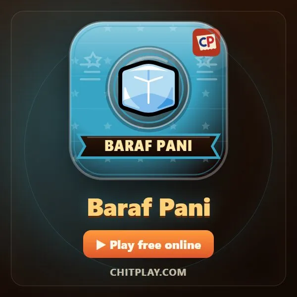
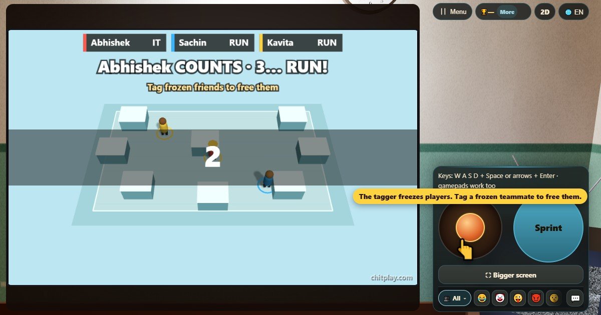

氷鬼 (Baraf Pani)
- 👥 3–4 人
- アーケードゲーム（3Dのテレビで）
- 🆓
日本語ガイド
タッチされたら凍る。仲間がタッチすれば氷がとける、なつかしい鬼ごっこ。
English name: Baraf Pani

遊び方
- バラフ・パーニーは3人か4人で遊びます。鬼が1人、ほかは逃げる人です。空いた席はコンピューターが入り、鬼は試合ごとに変わります。
- 鬼は庭の真ん中で3つ数え、その間に逃げる人は散らばります。それから追いかけっこの始まりです。
- ジョイスティックか矢印キーで動きます。ダッシュを押し続けると加速しますが、1秒ほどで息切れしてしばらく歩くことになります。
- 鬼にタッチされた人は凍ります（バラフ！）。自由な人が凍った仲間にタッチすると、とけて動けます（パーニー！）。
- 逃げる人が全員同時に凍ったら鬼の勝ち。時間切れのとき1人でも自由なら逃げる側の勝ちです。
得点
チームで勝ちます。鬼は全員を凍らせれば、逃げる側は時間切れまで1人でも自由でいれば勝ち。勝った側は1点です。
勝ち方
コンピューターの逃げる人を相手にひとりで、友だちと1つの画面で、近くで、またはオンラインで遊べます。空いた席はボットが入ります。
よくある質問
凍った人は動けますか？
いいえ。仲間がタッチして、とかす必要があります。
なぜ2人では遊べないのですか？
凍り鬼には、とかしてくれる仲間が必要です。2人だと最初のタッチで終わってしまうので、ChitPlayは最低3人にして、足りない分はコンピューターが入ります。
ボットと遊べますか？
はい。空いた席にはコンピューターが入ります。
遊び方
- ゲストで: 登録もログインもなし。名前を選んですぐに遊べます。
- コンピューターと: 誰もいなくても、空いた席にはコンピューターが座ります。かんたん・ふつう・むずかしいから選べます。
- オンラインで: 世界中のプレイヤーがいる公開テーブルに参加できます。
- 近くの友だちと: 1台のスマホでゲームを始めてコードかQRコードを共有。友だちは自分のスマホで参加します。
- 1台のスマホで: 順番にスマホを回せば、家族みんなで1台で遊べます。
ほかの言語
- हिन्दी: बर्फ़-पानी
- Hinglish: Baraf Pani
- Español: Pilla congelado
- Português: Pega-gelo
- Français: Chat glacé
- Deutsch: Einfrier-Fangen
- Bahasa Indonesia: Tag Beku
- Türkçe: Don-Ebelemece
- Italiano: Acchiapparella congelata
- 한국어: 얼음땡
- 中文: 冰冻人
- Русский: Колдунчики (Замри-отомри)
- اردو: برف پانی
- नेपाली: बरफ पानी
- বাংলা: বরফ পানি
- English: Baraf Pani · 詳しいルール（英語）
すべてのゲーム


ChitPlay では本物のお金、賭け、賞品は一切ありません。ポイントに価値はありません。